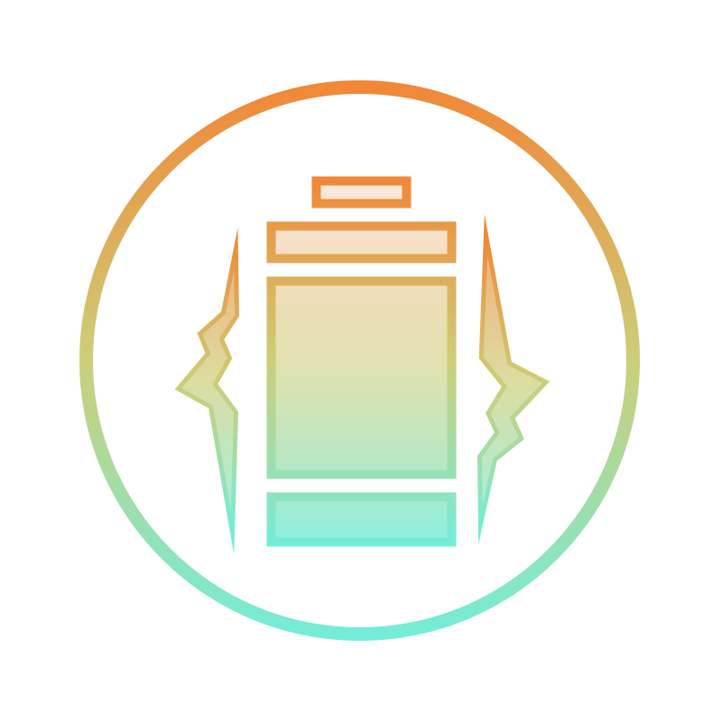

Project 1: Productivity App Prototype
Exploring the design process and building an interactive Figma prototype.
As a part of my User Interface Design class, I, along with a team of 4 other students, went through the process of creating a prototype an app with a focus on human-centered design.
View Prototype Here >Project 2: Assets for Altarune
Artwork and Illustrative Work:
I worked as a member of the art and UI team for Altarune, a game made by students at GaTech.
UI Icons:
